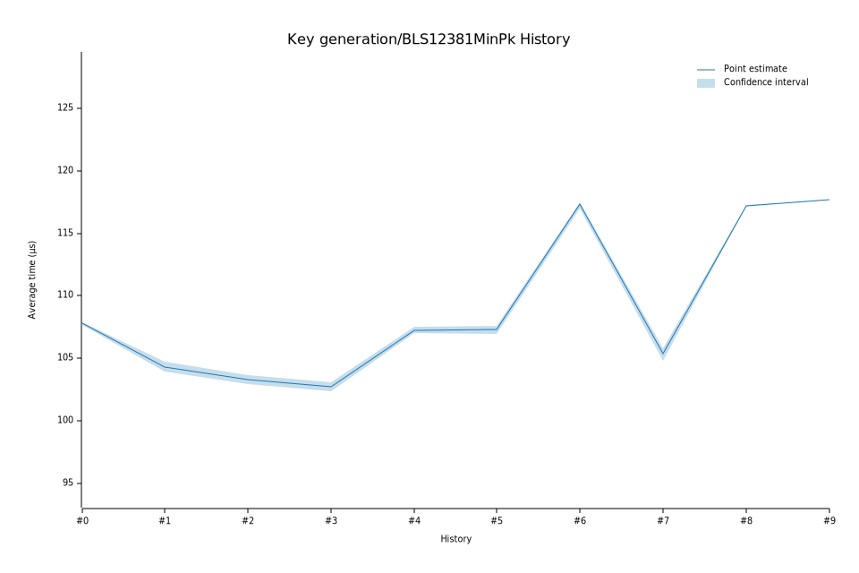

# 52023-02-13T20:52:35Z
|
Lower Bound |
Estimate |
Upper Bound |
| Value: |
106.93µs |
107.30µs |
107.62µs |
| Change in Value: |
-0.6870% |
-0.3495% |
-0.0063% |
Change within noise threshold.
# 42023-02-09T12:58:34Z
|
Lower Bound |
Estimate |
Upper Bound |
| Value: |
107.05µs |
107.24µs |
107.53µs |
| Change in Value: |
+4.1494% |
+4.6963% |
+5.1770% |
No change in performance detected.
# 32023-02-08T19:06:33Z
|
Lower Bound |
Estimate |
Upper Bound |
| Value: |
102.34µs |
102.70µs |
103.10µs |
| Change in Value: |
-0.8606% |
-0.3152% |
+0.2695% |
Change within noise threshold.
# 22022-12-05T08:54:55Z
|
Lower Bound |
Estimate |
Upper Bound |
| Value: |
102.94µs |
103.30µs |
103.69µs |
| Change in Value: |
-1.8375% |
-1.3553% |
-0.8566% |
No change in performance detected.
# 12022-11-14T12:10:19Z
|
Lower Bound |
Estimate |
Upper Bound |
| Value: |
103.97µs |
104.34µs |
104.71µs |
| Change in Value: |
-3.3549% |
-2.9926% |
-2.6672% |
No change in performance detected.
# 02022-11-04T13:47:56Z
|
Lower Bound |
Estimate |
Upper Bound |
| Value: |
107.69µs |
107.80µs |
107.91µs |